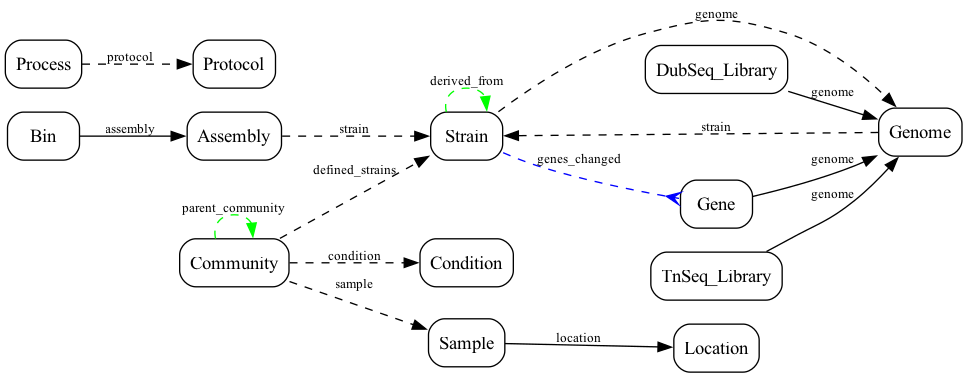

CORAL LinkML Schema Visualization
Entity-Relationship diagrams for the ENIGMA Common Data Model
Schema Structure
CORAL Complete Schema
erDiagram
Assembly {
string assembly_id
string assembly_name
string assembly_strain
integer assembly_n_contigs
string assembly_link
}
Bin {
string bin_id
string bin_name
string bin_assembly
stringList bin_contigs
}
Community {
string community_id
string community_name
string community_community_type
string community_sample
string community_parent_community
string community_condition
stringList community_defined_strains
string community_description
}
Condition {
string condition_id
string condition_name
}
DubSeqLibrary {
string dubseq_library_id
string dubseq_library_name
string dubseq_library_genome
integer dubseq_library_n_fragments
}
Gene {
string gene_id
string gene_gene_id
string gene_genome
stringList gene_aliases
integer gene_contig_number
string gene_strand
integer gene_start
integer gene_stop
string gene_function
}
Genome {
string genome_id
string genome_name
string genome_strain
integer genome_n_contigs
integer genome_n_features
string genome_link
}
Image {
string image_id
string image_name
string image_description
string image_MIME_type
integer image_size
string image_dimensions
string image_link
}
Location {
string location_id
string location_name
float location_latitude
float location_longitude
string location_continent
string location_country
string location_region
string location_biome
string location_feature
}
OTU {
string otu_id
string otu_name
}
Process {
string process_id
string process_process
string process_person
string process_campaign
string process_protocol
string process_date_start
string process_date_end
stringList process_input_objects
stringList process_output_objects
}
Protocol {
string protocol_id
string protocol_name
string protocol_description
string protocol_link
}
Reads {
string reads_id
string reads_name
integer reads_read_count
string reads_read_type
string reads_sequencing_technology
string reads_link
}
Sample {
string sample_id
string sample_name
string sample_location
float sample_depth
float sample_elevation
string sample_date
string sample_time
string sample_timezone
string sample_material
string sample_env_package
string sample_description
}
Strain {
string strain_id
string strain_name
string strain_description
string strain_genome
string strain_derived_from
stringList strain_genes_changed
}
Taxon {
string taxon_id
string taxon_name
string taxon_ncbi_taxid
}
TnSeqLibrary {
string tnseq_library_id
string tnseq_library_name
string tnseq_library_genome
string tnseq_library_primers_model
integer tnseq_library_n_mapped_reads
integer tnseq_library_n_barcodes
integer tnseq_library_n_usable_barcodes
integer tnseq_library_n_insertion_locations
float tnseq_library_hit_rate_essential
float tnseq_library_hit_rate_other
}
CORAL Schema Overview (No Attributes)
erDiagram
Assembly {
}
Bin {
}
Community {
}
Condition {
}
DubSeqLibrary {
}
Gene {
}
Genome {
}
Image {
}
Location {
}
OTU {
}
Process {
}
Protocol {
}
Reads {
}
Sample {
}
Strain {
}
Taxon {
}
TnSeqLibrary {
}
Entity Relationships
Entity Relationship Diagram
Shows foreign key relationships, hierarchies, and cardinality between entities.
erDiagram
Assembly |o--|| Strain : "assembly_strain"
Bin ||--|| Assembly : "bin_assembly"
Community |o--|| Condition : "community_condition"
Community |o--|| Sample : "community_sample"
DubSeq_Library ||--|| Genome : "dubseq_library_genome"
Gene ||--|| Genome : "gene_genome"
Genome |o--|| Strain : "genome_strain"
Process |o--|| Protocol : "process_protocol"
Sample ||--|| Location : "sample_location"
Strain |o--|| Genome : "strain_genome"
TnSeq_Library ||--|| Genome : "tnseq_library_genome"
Community |o--o{ Strain : "community_defined_strains"
Strain |o--o{ Gene : "strain_genes_changed"
Community |o--o{ Community : "community_parent_community"
Strain |o--o{ Strain : "strain_derived_from"
Entity Relationship Graph (Graphviz)
Alternative view showing relationship types. Solid lines = required, dashed = optional, blue = many-to-many, green = self-referential.
